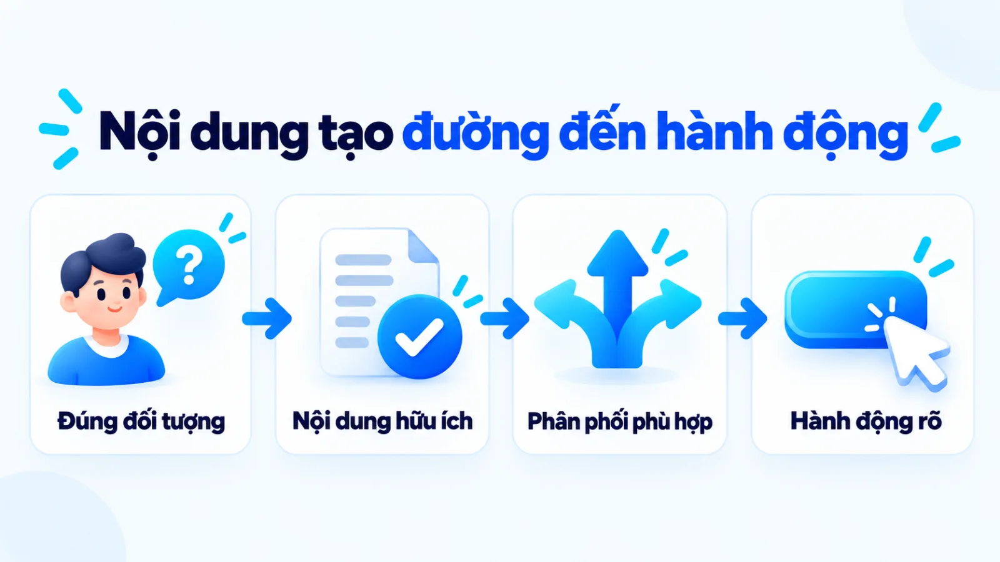
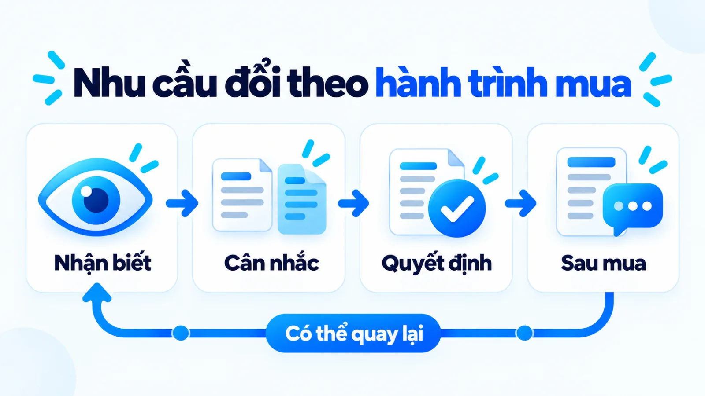
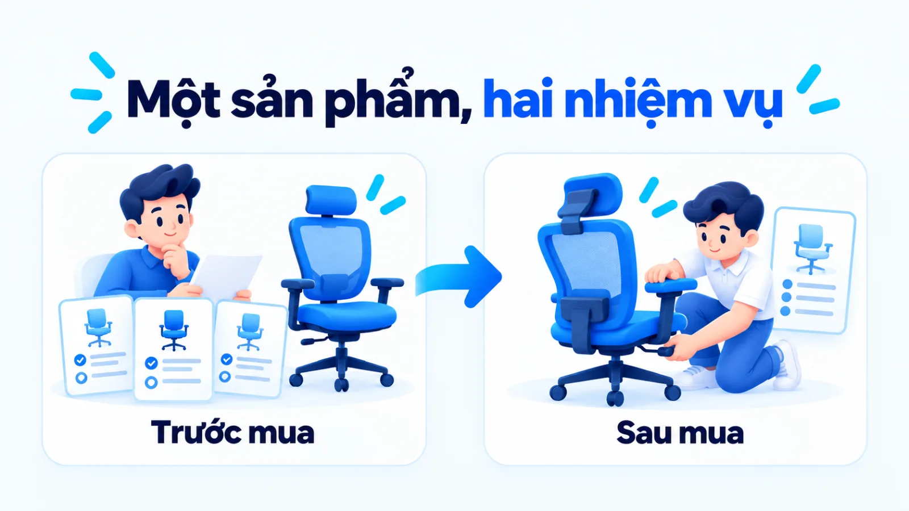
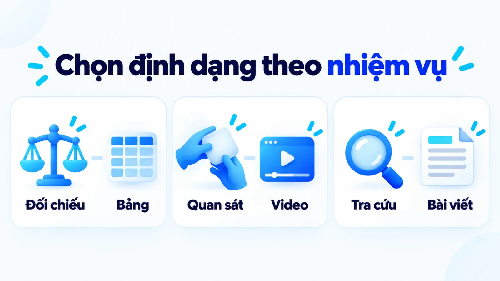
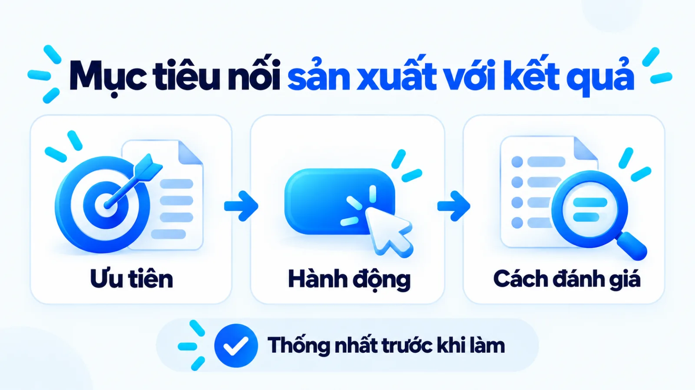

Content Marketing là gì? Cách bắt đầu và đo hiệu quả
Content Marketing là phương pháp tiếp cận khách hàng thông qua việc sáng tạo và phân phối nhất quán những nội dung hữu ích, phù hợp với nhu cầu của họ. Tôi là Lê Tuấn Việt, Marketing Leader tại TAKI Group. Bài viết giúp bạn hiểu vai trò của tiếp thị nội dung, phân biệt với viết bài và quảng cáo, chọn cách triển khai và đo hiệu quả theo mục tiêu kinh doanh.
- Đăng ngày
- Cập nhật
Tóm tắt nhanh
- Viết bài là một phần việc; hệ thống nội dung còn cần mục tiêu, người đọc, phân phối và cách đánh giá hành động tiếp theo.
- Chọn định dạng và kênh sau khi xác định câu hỏi của khách hàng. Khả năng duy trì quyết định phạm vi triển khai.
- Lượt xem giúp chẩn đoán khả năng tiếp cận; lead đạt chuẩn và kết quả bán hàng cần được xác nhận bằng dữ liệu phía sau.
Mục lục bài viết8 phần
Content Marketing là gì và hoạt động như thế nào?
Content Marketing là cách tiếp cận chiến lược kết hợp nội dung hữu ích với phân phối có chủ đích cho nhóm đối tượng xác định, hướng tới hành động phù hợp mục tiêu kinh doanh.
Content Marketing Institute gắn việc tạo nội dung với phân phối. Bài tốt vẫn cần đến đúng người và có bước tiếp theo phù hợp.

Các thành phần cần xác định
Có thể kiểm tra một hệ thống nội dung qua các câu hỏi vận hành sau đây.
- Đối tượng: Ai cần thông tin, trong tình huống cụ thể nào?
- Giá trị: Nội dung giúp người đọc hiểu, so sánh hoặc thực hiện việc gì?
- Phân phối: Người đọc có thể gặp và sử dụng nội dung ở đâu?
- Hành động: Sau khi đọc, họ nên tiến tới bước phù hợp nào?
SEO, tức tối ưu hóa công cụ tìm kiếm, có thể giúp bài được tìm thấy; email và mạng xã hội có thể đưa bài tới người quan tâm. Đây là các cách tiếp cận người đọc, cần được phối hợp theo mục đích sử dụng nội dung. Để chọn kênh tự nhiên hay trả phí trên tìm kiếm, hãy xem marketing online Google theo nguồn lực.
Content Marketing Institute cũng đặt nội dung trong hoạt động marketing chung. Doanh nghiệp cần người phụ trách, nguồn tin và khả năng cập nhật sau xuất bản để thông tin tiếp tục hữu ích khi nhu cầu khách hàng thay đổi.
Content Marketing khác viết nội dung, copywriting và quảng cáo thế nào?
Tiếp thị nội dung tổ chức mục tiêu và cách vận hành; viết nội dung và copywriting tạo thông điệp; quảng cáo trả phí hỗ trợ phân phối. Các hoạt động có thể phối hợp trong cùng chiến dịch. Mỗi hạng mục thực thi trên là một chiến thuật marketing có đầu ra đo được để hiện thực hóa mục tiêu chiến lược.
Nielsen Norman Group giải thích chiến lược nội dung là nền định hướng và kết nối các tác vụ. Bảng dưới dùng mục tiêu, phạm vi và đầu ra để phân vai thực hành; ranh giới công việc có thể giao nhau trong từng đội.
Content Writing là hoạt động viết nội dung để giải thích, cung cấp thông tin. Copywriting là viết câu chữ thuyết phục người đọc thực hiện phản hồi cụ thể. Một bài hướng dẫn có thể cần cả phần giải thích rõ và lời mời hành động phù hợp.
| Hoạt động | Mục tiêu và phạm vi | Đầu ra và phối hợp |
|---|---|---|
| Content Marketing | Nối nhu cầu với nội dung và hành vi | Kế hoạch, nội dung, phân phối, đánh giá |
| Content Writing, viết nội dung | Giải thích và cung cấp thông tin | Bài hướng dẫn, kịch bản, tài liệu |
| Copywriting, viết thuyết phục | Thúc đẩy hành động cụ thể | Tiêu đề, thông điệp, lời mời |
| Quảng cáo trả phí | Đưa thông điệp tới đối tượng | Phân phối tài sản nội dung |
Dấu hiệu cần sửa định hướng trước khi thuê viết
Nếu đội ngũ chưa thống nhất bài dành cho ai và giúp người đọc quyết định gì, thêm người viết có thể chỉ làm tăng sản lượng. Tôi ưu tiên chốt những câu hỏi đó trước khi giao thêm đầu bài. Bạn có thể tham khảo quy trình viết content marketing bốn bước từ brief đến duyệt bài.
Khi định hướng đã rõ nhưng thiếu tài sản, ưu tiên năng lực sản xuất. Ít người phù hợp tiếp cận thì kiểm tra phân phối. Bước tiếp theo chưa rõ thì rà thông điệp, lời mời hành động và trang đích.
Content Marketing hỗ trợ hành trình khách hàng ra sao?
Nội dung hỗ trợ khách hàng bằng cách giải đáp nhu cầu ở từng thời điểm: nhận ra vấn đề, đánh giá lựa chọn, quyết định và sử dụng sau mua. Hành trình thực tế có thể quay lại hoặc bỏ qua một bước.
McKinsey & Company đưa trải nghiệm sau mua vào mô hình hành trình quyết định công bố năm 2009. Đây là khung tham khảo để tổ chức nhu cầu, không phải mô tả hiện hành cho mọi doanh nghiệp Việt Nam.
Dùng bảng này để kiểm tra tài sản đang giải đáp câu hỏi nào và hỗ trợ hành động gì tiếp.
| Giai đoạn và nhu cầu | Nội dung, nơi phân phối | Hành động mong muốn |
|---|---|---|
| Nhận biết: hiểu vấn đề | Bài giải thích trên website, video trên mạng xã hội | Đọc tiếp nội dung liên quan |
| Cân nhắc: đánh giá lựa chọn | Tiêu chí và bài so sánh trên website | Xem giải pháp phù hợp |
| Quyết định: giảm băn khoăn | Trang đích nêu dịch vụ, quy trình | Gửi yêu cầu đủ thông tin |
| Sau mua: sử dụng đúng | Hướng dẫn trên website, qua email | Hoàn tất sử dụng, gửi phản hồi |

Ví dụ biên tập, không phải kết quả khách hàng thật: một doanh nghiệp nội thất văn phòng cần tiếp cận người phụ trách mua sắm. Bài về dấu hiệu ghế không phù hợp giúp nhận diện vấn đề; bảng tiêu chí chọn ghế hỗ trợ so sánh; tài liệu thử mẫu giúp chuẩn bị quyết định.
Sau mua, hướng dẫn điều chỉnh ghế tiếp tục phục vụ người sử dụng. Doanh nghiệp không cần chèn yêu cầu báo giá vào mọi tài sản, vì người đang tìm cách sử dụng cần được hỗ trợ đúng tình huống.

Khách có thể chuyển bài cho đồng nghiệp qua tin nhắn rồi liên hệ trực tiếp. Dark social trong phân phối nội dung giải thích những điểm chạm chia sẻ riêng tư khó thấy trong báo cáo nguồn truy cập.
Doanh nghiệp ít nguồn lực nên chọn chủ đề và kênh thế nào?
Hãy chọn câu hỏi có liên quan tới mục tiêu kinh doanh, định dạng giúp giải thích rõ và kênh có thể duy trì. Phạm vi nên theo năng lực nghiên cứu, kiểm duyệt và xử lý phản hồi thực tế.
Đầu vào hữu ích gồm câu hỏi từ bán hàng, phản hồi hỗ trợ, dữ liệu tìm kiếm và tài liệu đang có. Đối chiếu các nguồn để tìm nhu cầu lặp lại, thay vì chọn chủ đề chỉ vì đội ngũ thấy thú vị.
Sau khi xác định câu hỏi, dùng cách chọn content angle, tức góc tiếp cận nội dung, để giới hạn trọng tâm. Bảng phù hợp khi cần đối chiếu; video phù hợp khi cần quan sát thao tác; bài viết phù hợp khi người đọc cần tra cứu chi tiết.

Dùng các điều kiện sau để cắt phạm vi trước khi lập lịch xuất bản.
- Thiếu dữ liệu: tổng hợp câu hỏi khách hàng và rà tài liệu sẵn có trước khi mở thêm chủ đề.
- Thiếu nhân sự: ưu tiên định dạng làm tốt được và kênh chính có người theo dõi phản hồi.
- Có tài sản tốt nhưng thiếu tiếp cận: thử thêm cách phân phối trong giới hạn ngân sách đã thống nhất, kèm tiêu chí dừng thử.
Website doanh nghiệp quản trị giúp chủ động tổ chức, cập nhật tài sản. Kênh bên ngoài phụ thuộc cách hiển thị và phân phối của nền tảng. Cân nhắc nơi khách hiện diện cùng chi phí duy trì. Khi kết hợp nhiều điểm đích trực tuyến, bạn có thể tham khảo khung chọn kênh và đo lường trong marketing bán hàng online.
Không cần mở thêm kênh khi chưa có cách cập nhật thông tin hoặc trả lời người quan tâm. Một phạm vi nhỏ có người chịu trách nhiệm giúp đội ngũ nhận ra điều cần sửa trước khi tăng khối lượng.
Quy trình Content Marketing cần đầu vào và đầu ra nào?
Quy trình nối mục tiêu, nghiên cứu người đọc, lựa chọn tài sản với sản xuất, kiểm duyệt và đo lại. Đầu ra mỗi bước cần đủ rõ để bàn giao công việc.
Bước 1: Chốt mục tiêu và hành động cần tạo
Dùng ưu tiên kinh doanh và dữ liệu nền để chọn hành động, kỳ đánh giá và giới hạn nguồn lực. Tránh mục tiêu chỉ ghi “tăng tương tác” khi điều doanh nghiệp cần biết là nội dung có tạo yêu cầu phù hợp hay không.
Đầu ra: phiếu mục tiêu có hành động, chỉ số, người phụ trách và kỳ đo; hoàn tất khi người duyệt thống nhất cách nhận biết kết quả.

Bước 2: Xác định người đọc và câu hỏi cần giải đáp
Đối chiếu trao đổi bán hàng, hỗ trợ và dữ liệu khách hàng để chọn nhóm người đọc. Phân biệt điều đã quan sát với giả định; bài về zero-party data và first-party data giúp hiểu dữ liệu khách chủ động cung cấp và dữ liệu từ tương tác trực tiếp.
Đầu ra: bản đồ câu hỏi gắn nhu cầu với hành động tiếp theo; hoàn tất khi mỗi câu hỏi có căn cứ hoặc được ghi rõ là giả định cần kiểm.
Bước 3: Chọn chủ đề, định dạng và kênh
Rà tài sản hiện có trước khi giao sản xuất mới. Khung vòng đời nội dung của Nielsen Norman Group tính cả việc duy trì và gỡ bỏ; vì vậy, quyết định có thể là cập nhật hoặc dùng lại tài sản đang có thay vì viết bài mới.
Đầu ra: danh sách nội dung ưu tiên có lý do chọn, người phụ trách và cách phân phối; hoàn tất khi lịch phù hợp năng lực đội ngũ.
Bước 4: Sản xuất, kiểm duyệt, phân phối và đo lại
Dùng brief, tức bản yêu cầu nội dung, và nguồn đã kiểm tra để sản xuất, rồi chuyển người có chuyên môn duyệt trước khi phân phối. Thống nhất brand voice và tone of voice, tức giọng thương hiệu và sắc thái theo tình huống, để thông tin được diễn đạt nhất quán.
Google Search Central đưa nguồn dẫn và căn cứ chuyên môn vào bộ câu hỏi tự đánh giá độ tin cậy. Trước khi phát hành, kiểm tra các điều kiện tối thiểu sau đây.
- Dữ kiện và nguồn có khớp nội dung đã duyệt?
- Người đọc có nhận được câu trả lời cần thiết?
- Lời mời hành động có phù hợp tình huống?
- Quyền sử dụng tài sản đã được kiểm tra?
- Hành động mục tiêu có đo được và có người rà kết quả?
Đầu ra: tài sản đã duyệt cùng bản ghi đo và ngày rà soát; hoàn tất khi thử được đường dẫn, hành động mục tiêu và cách ghi nhận dữ liệu.
Đo hiệu quả Content Marketing thế nào khi lượt xem tăng?
Cần đọc tín hiệu tương tác cùng hành vi đạt chuẩn và kết quả kinh doanh. Lượt xem tăng giúp xác định nội dung được tiếp cận nhiều hơn, nhưng chưa xác nhận chất lượng khách hay đóng góp doanh thu.
Dùng khung dưới để xác định nguồn dữ liệu và giới hạn kết luận trước khi lập báo cáo. Mỗi chỉ số cần có kỳ đo, điều kiện ghi nhận và người chịu trách nhiệm đối chiếu.
| Tầng đo | Cách tính và nguồn dữ liệu | Giới hạn khi đọc |
|---|---|---|
| Tương tác | Người làm hành vi ÷ người đủ điều kiện; dữ liệu website hoặc nền tảng | Hành vi chưa xác nhận nhu cầu mua |
| Lead đạt chuẩn | Yêu cầu đạt tiêu chí ÷ yêu cầu hợp lệ; dữ liệu biểu mẫu và bán hàng | Cần tiêu chí, loại trùng, kiểm tra |
| Kết quả kinh doanh | Đơn hàng, doanh thu được đối soát; dữ liệu bán hàng và kế toán | Nhiều điểm chạm, chưa chứng minh tác động riêng của nội dung |
Lead đạt chuẩn là khách tiềm năng đáp ứng tiêu chí marketing và bán hàng thống nhất. Khi đo nhấp lời mời, chia số người nhấp cho số người đã thấy lời mời trong cùng kỳ; loại trùng và giữ cùng đơn vị đếm.
Google Analytics Help định nghĩa key event là sự kiện đo hành động quan trọng với doanh nghiệp. Đánh dấu sự kiện chưa xác nhận ý định mua; micro conversion trong đo lường nội dung, tức chuyển đổi vi mô, giúp phân biệt hành vi trung gian với mục tiêu chính.
Khi lượt xem tăng mà yêu cầu đạt chuẩn không đổi, hãy kiểm tra nhóm truy cập, độ khớp nhu cầu, lời mời hành động và trang đích. Trong ví dụ biên tập nội thất, bài thu hút người mua ghế cá nhân có thể chưa phù hợp mục tiêu tiếp cận bộ phận mua sắm.
Attribution trong Google Analytics, tức quy kết, là cách phân bổ tín dụng cho các điểm chạm dẫn tới hành động. Mô hình được chọn ảnh hưởng cách chia tín dụng; báo cáo cần ghi rõ cách phân bổ và đối chiếu dữ liệu bán hàng trước khi kết luận đóng góp.
Câu hỏi thường gặp về content marketing
Bao lâu nên đánh giá một kế hoạch nội dung?
Kỳ đánh giá nên phù hợp với chu kỳ mua và tốc độ tích lũy dữ liệu của doanh nghiệp. Có thể kiểm tra việc xuất bản, phân phối sớm, nhưng cần thêm thời gian để quan sát hành vi mua. Ghi trước kỳ đo và điều kiện dừng để tránh đổi tiêu chí theo kết quả.
Doanh nghiệp có cần đăng nội dung mỗi ngày không?
Không cần đăng mỗi ngày nếu tần suất đó khiến đội ngũ bỏ qua kiểm duyệt hoặc phân phối. Chọn lịch có thể duy trì cả khâu sản xuất, trả lời phản hồi và cập nhật tài sản cũ. Tăng tần suất khi có bằng chứng rằng nhóm người đọc cần thêm nội dung phù hợp.
Có nên dùng lại nội dung trên nhiều kênh không?
Có, nếu thông tin cốt lõi còn phù hợp với người đọc trên từng kênh. Giữ nguyên dữ kiện, nhưng điều chỉnh cách mở đầu, độ dài và lời mời hành động. Theo dõi từng phiên bản để biết cách chuyển thể nào hỗ trợ mục tiêu tốt hơn.
Khi nào nên cập nhật hoặc gỡ nội dung cũ?
Nên cập nhật khi tài sản còn hữu ích nhưng thông tin hoặc nhu cầu người đọc đã thay đổi. Cân nhắc hợp nhất hay gỡ khi nội dung trùng, sai hoặc không còn cần thiết. Kiểm tra liên kết đang trỏ tới tài sản trước khi đổi URL hoặc gỡ bỏ.
Có thể thuê ngoài toàn bộ việc sản xuất nội dung không?
Có thể thuê ngoài sản xuất nếu doanh nghiệp vẫn giữ người chịu trách nhiệm về mục tiêu và kiểm duyệt. Bên thực hiện cần được tiếp cận bản yêu cầu nội dung, nguồn thông tin và phản hồi bán hàng phù hợp. Thuê người viết sẽ khó giải quyết việc doanh nghiệp chưa xác định mình cần nói với ai.
Khi nào chưa nên mở rộng Content Marketing?
Chưa nên mở rộng khi thông tin sản phẩm chưa thống nhất hoặc đội ngũ chưa xử lý được phản hồi từ nội dung hiện có. Hãy sửa điểm nghẽn trước, vì tăng sản lượng có thể làm thông tin thiếu nhất quán lan rộng. Chỉ mở thêm kênh khi có người phụ trách và cách đánh giá rõ ràng.
Kết luận
Điểm bắt đầu là câu hỏi khách hàng cần giải đáp và hành động doanh nghiệp muốn hỗ trợ. Chọn phạm vi vừa sức, giao đầu ra rõ, kiểm duyệt trước phân phối và đối chiếu tương tác với kết quả phía sau trước khi mở rộng.
Lập phiếu thử nghiệm gồm mục tiêu, người đọc, tài sản, kênh và ngày đánh giá. Kiến thức Marketing theo mục tiêu kinh doanh giúp đặt nội dung trong bối cảnh khách hàng và thị trường.